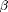

env
Fit the envelope model.
Contents
Usage
stat=env(X,Y,u,opts)
Input
X: Predictors. An n by p matrix, p is the number of predictors. The predictors can be univariate or multivariate, discrete or continuous.
Y: Multivariate responses. An n by r matrix, r is the number of responses and n is number of observations. The responses must be continuous variables, and r should be strictly greater than p.
u: Dimension of the envelope. An integer between 0 and r.
opts: A list containing the optional input parameter, to control the iterations in sg_min. If one or several (even all) fields are not defined, the default settings are used.
- opts.maxIter: Maximum number of iterations. Default value: 300.
- opts.ftol: Tolerance parameter for F. Default value: 1e-10.
- opts.gradtol: Tolerance parameter for dF. Default value: 1e-7.
- opts.verbose: Flag for print out output, logical 0 or 1. Default value: 0.
Output
stat: A list that contains the maximum likelihood estimators and some statistics.
- stat.beta: The envelope estimator of the regression coefficients . An r by p matrix.
- stat.Sigma: The envelope estimator of the error covariance matrix. An r by r matrix.
- stat.Gamma: The orthogonal basis of the envelope subspace. An r by u semi-orthogonal matrix.
- stat.Gamma0: The orthogonal basis of the complement of the envelope subspace. An r by r-u semi-orthogonal matrix.
- stat.eta: The coordinates of with respect to Gamma. An u by p matrix.
- stat.Omega: The coordinates of Sigma with respect to Gamma. An u by u matrix.
- stat.Omega0: The coordinates of Sigma with respect to Gamma0. An r-u by r-u matrix.
- stat.alpha: The estimated intercept in the envelope model. An r by 1 vector.
- stat.l: The maximized log likelihood function. A real number.
- stat.asyEnv: Asymptotic standard error for elements in under the envelope model. An r by p matrix. The standard errors returned are asymptotic, for actual standard errors, multiply by 1/sqrt(n).
- stat.ratio: The asymptotic standard error ratio of the standard multivariate linear regression estimator over the envelope estimator, for each element in . An r by p matrix.
- stat.np: The number of parameters in the envelope model. A positive integer.
Description
This function fits the envelope model to the responses and predictors, using the maximum likehood estimation. When the dimension of the envelope is between 1 and r-1, we implemented the algorithm in Cook et al. (2010). When the dimension is r, then the envelope model degenerates to the standard multivariate linear regression. When the dimension is 0, it means that X and Y are uncorrelated, and the fitting is different.
References
- The codes is implemented based on the algorithm in Section 4.3 of Cook et al (2010).
- The Grassmann manifold optimization step calls the package sg_min 2.4.1 by Ross Lippert (http://web.mit.edu/~ripper/www.sgmin.html).
Example
The following codes will reconstruct the results in the wheat protein data example in Cook et al. (2010).
load wheatprotein.txt X=wheatprotein(:,8); Y=wheatprotein(:,1:6); alpha=0.01; u=lrt_env(X,Y,alpha) stat=env(X,Y,u) stat.Omega eig(stat.Omega0) stat.ratio
function stat=env(X,Y,u,opts) % Verify and initialize the parameters % if (nargin < 3) error('Inputs: X, Y and u should be specified!'); elseif (nargin==3) opts=[]; end [n,p]=size(X); [n1,r]=size(Y); if (n ~= n1) error('The number of observations in X and Y should be equal!'); end if (p >= r) error('When the number of responses is less than the number of predictors, the envelope model cannot be applied.'); end u = floor(u); if (u < 0 || u > r) error('u should be an integer between [0, r]!'); end opts=make_opts(opts); if isfield(opts,'init') [r2,u2]=size(opts.init); if (r ~= r2 || u ~= u2) error('The size of the initial value should be r by u!'); end if (rank(opts.init) < u2) error('The initial value should be full rank!'); end end %---preparation--- dataParameter=make_parameter(X,Y,'env'); n=dataParameter.n; p=dataParameter.p; r=dataParameter.r; mX=dataParameter.mX; mY=dataParameter.mY; sigX=dataParameter.sigX; sigY=dataParameter.sigY; sigRes=dataParameter.sigRes; betaOLS=dataParameter.betaOLS; eigtem=eig(sigY); F = make_F(@F4env,dataParameter); dF = make_dF(@dF4env,dataParameter); % With different u, the model will be different. When u=0, X and Y are % uncorrelated, so it should be fitted differently. When u=r, the envelope % model reduces to the standard model, and it also should be fitted % differently. if u>0 && u<r %---Compute \Gamma using sg_min--- maxIter=opts.maxIter; ftol=opts.ftol; gradtol=opts.gradtol; if (opts.verbose==0) verbose='quiet'; else verbose='verbose'; end if ~isfield(opts,'init') init=get_Init(F,X,Y,u,dataParameter); else init=opts.init; end [l Gamma]=sg_min(F,dF,init,maxIter,'prcg',verbose,ftol,gradtol); %---Compute the rest of the parameters based on \Gamma--- Gamma0=grams(nulbasis(Gamma')); beta=Gamma*Gamma'*betaOLS; alpha=mY-beta*mX; eta=Gamma'*beta; Omega=Gamma'*sigRes*Gamma; Omega0=Gamma0'*sigY*Gamma0; Sigma1=Gamma*Omega*Gamma'; Sigma2=Gamma0*Omega0*Gamma0'; Sigma=Sigma1+Sigma2; %---compute asymptotic variance and get the ratios--- asyFm=kron(inv(sigX),Sigma); asyFm=reshape(sqrt(diag(asyFm)),r,p); temp=kron(eta*sigX*eta',inv(Omega0))+kron(Omega,inv(Omega0))+kron(inv(Omega),Omega0)-2*kron(eye(u),eye(r-u)); asyEnv=kron(inv(sigX),Sigma1)+kron(eta',Gamma0)*inv(temp)*kron(eta,Gamma0'); asyEnv=reshape(sqrt(diag(asyEnv)),r,p); stat.beta=beta; stat.Sigma=Sigma; stat.Gamma=Gamma; stat.Gamma0=Gamma0; stat.eta=eta; stat.Omega=Omega; stat.Omega0=Omega0; stat.alpha=alpha; stat.l=-n*r/2*(1+log(2*pi))-n/2*(l+log(prod(eigtem(eigtem>0)))); stat.asyEnv=asyEnv; stat.ratio=asyFm./asyEnv; stat.np=r+u*p+r*(r+1)/2; elseif u==0 stat.beta=zeros(r,p); stat.Sigma=sigY; stat.Gamma=[]; stat.Gamma0=eye(r); stat.eta=[]; stat.Omega=[]; stat.Omega0=sigY; stat.alpha=mY; stat.l=-n*r/2*(1+log(2*pi))-n/2*log(prod(eigtem(eigtem>0))); stat.asyEnv=[]; stat.ratio=ones(r,p); stat.np=r+u*p+r*(r+1)/2; elseif u==r asyFm=kron(inv(sigX),sigRes); asyFm=reshape(sqrt(diag(asyFm)),r,p); stat.beta=betaOLS; stat.Sigma=sigRes; stat.Gamma=eye(r); stat.Gamma0=[]; stat.eta=betaOLS; stat.Omega=sigRes; stat.Omega0=[]; stat.alpha=mY-betaOLS*mX; eigtem=eig(sigRes); stat.l=-n*r/2*(1+log(2*pi))-n/2*log(prod(eigtem(eigtem>0))); stat.asyEnv=asyFm; stat.ratio=ones(r,p); stat.np=r+u*p+r*(r+1)/2; end
Error using ==> env at 94 Inputs: X, Y and u should be specified!